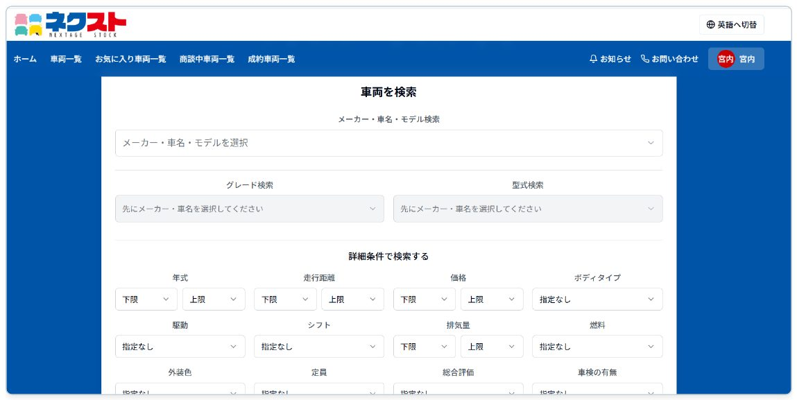
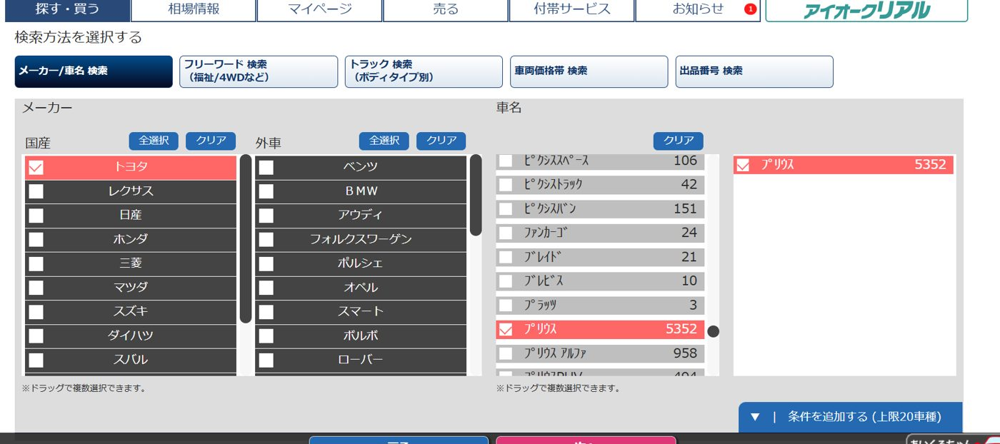
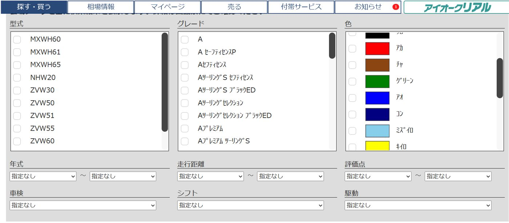
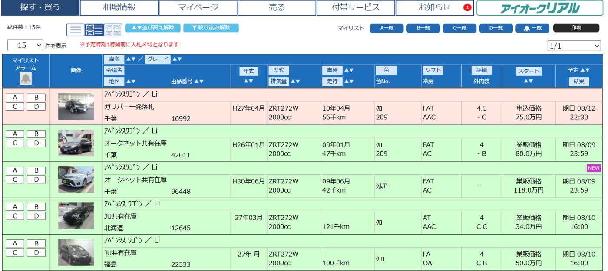

単元8
仮車両と車両条件
この単元のゴール案
ルールどおりに仮車両を選べる
含む内容：仮車両の選び方、信販会社ごとの車両条件
この単元の詳しいマニュアルは作成予定です（サンプルは単元9・13・20）。
3-3仮車両の選び方
- 3-3-1
審査は「仮の車両」でかける。実際に買う車は可決のあとお客様と決めるので、仮車両はルールどおり淡々と選ぶ
- 3-3-2
ルール
- 車種：お客様の希望車種
- 年式：7年前〜3年前
- 走行距離：3万km〜7万km
- 価格：検索結果の業販価格の「中央値」（一番安い車と一番高い車のちょうど真ん中）。同じ金額が複数あれば上に表示されている車、ちょうどの車がなければ一番近い金額の「高い方」
- 3-3-3
探し方

図3-Aネクステージストックの「車両を検索」。メーカー・車名・年式・走行距離を指定する 
図3-Bアイオークでメーカーと車名を選び「条件を追加する」 
図3-Cアイオークで年式・走行距離などの条件を入れる 
図3-D検索結果。業販価格を見て、一番高い車と一番安い車の真ん中（中央値）を選ぶ - 3-3-4
リローン・ICTに進むときは、その会社の車両条件（3-5）に合う仮車両に替える
- 3-3-5
希望車種がはっきりしないときは、総額100万〜200万円の推奨車両リストで審査をかけてよい
3-5信販会社ごとの車両条件
- 3-5-1
プレミア：国産車・外車とも可。外車は審査が厳しい
- 3-5-2
USS：国産車のみ。支払年数によって初度登録の縛りあり。MCCSの適合車種か確認が必要
- 3-5-3
リローン：国産車のみ。初度登録から15年未満、15万km以下。レクサスと2ドアスポーツは不可
- 3-5-4
モデルクレジット：リース満了時に13年落ちまで（例：7年リースなら6年落ちまで）
- 3-5-5
ICT：国産車のみ（レクサス除く）。10年落ち以内、10万km以下。2000ccまで（アルファード、ヴェルファイア、ハイエース2.0ガソリンは可）。AT限定。スポーツカー・クーペ・セダン・軽トラ・改造車・電気自動車は不可
教育担当者のチェック
押すと印が付きます。この端末のブラウザにだけ保存されます。正式な記録は印刷したチェックリストに書いてください。